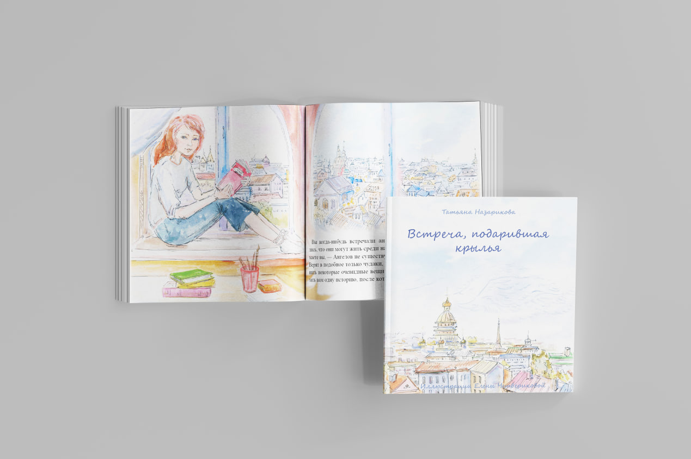
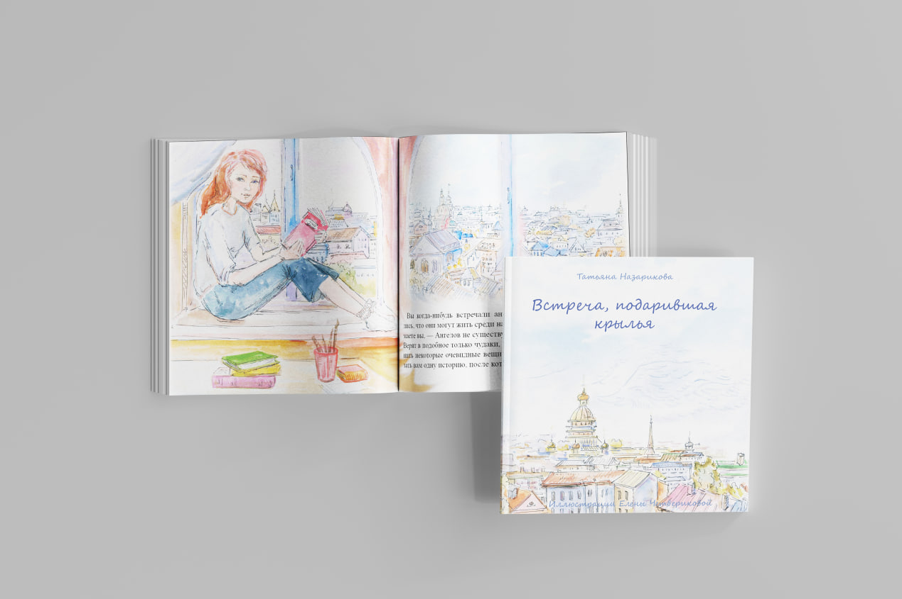

Шрифтовой зин "Москва-Нева"
За основу взята идея песни В. Сюткина “Москва-Нева”. Зин состоит из строчек этой песни, выполненных в необычном шрифтовом решении.
Смотреть проект
Я закончила МКИК, живу и работаю в Москве.
Занимаюсь разработкой печатной продукции, книжной и журнальной версткой.
Живу тут! 

За основу взята идея песни В. Сюткина “Москва-Нева”. Зин состоит из строчек этой песни, выполненных в необычном шрифтовом решении.
Смотреть проектСтатья для книги, посвящённой экологическим проблемам. Разворот выполнен в стиле темы, освещённой в материале.
Смотреть проект